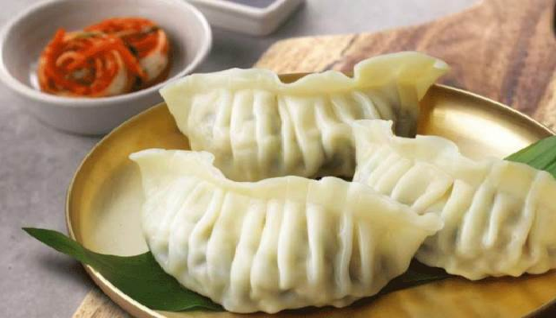

Du lịch Hàn Quốc
Welcome to Korea
Welcome to Korea

Bindaetteok (còn gọi là nokdujeon hoặc jijim nokdu; nghĩa là “bánh đậu xanh”) là một loạt biến thể của Jeon, một loại bánh xèo Triều Tiên. Nó được làm bằng đậu xanh, với hành xanh, kim chi, hoặc tiêu nấu chín trong một chảo chiên. Bạn có thể thường bắt gặp món ăn này ở Myeongdong và Hongdae. Mặc dù Bindaetteok là món ăn cổ điển mang tính lâu đời trong các lễ hội, nhưng nó cũng rất phổ biến như một món ăn đường phố. Những chiếc bánh kếp vàng nâu giòn rụm bên trong mềm mại với chút ròn của rau củ, lại vô cùng thơm ngon bổ dưỡng nên đã chiếm vị trí đầu của top 6 món ăn vặt nổi tiếng ở Hàn quốc.
Tteokbokki hay Ddeobokki là món bánh gạo cay truyền thống thể hiện cho văn hóa ẩm thực Hàn Quốc, được chế biến bằng cách đun tteok nướng, thịt, rau, trứng, và gia vị với nước, rồi rắc lên trên các hạt ginkgo và hạt dẻ giã nhỏ nước sốt sánh lại, từng miếng bánh gạo bám đều một lớp nước sốt tương ớt. Cái dẻo thơm của bánh gạo quyện cùng vị cay ấm nóng, ngọt nhẹ của tương ớt và gia vị sẽ làm bạn thích thú khi thưởng thức. Hai năm gần đây trước sự du nhập của KPOP, Tteokbokki đang dần trở thành ” street-food ” không thể thiếu của các bạn trẻ yêu thích ẩm thực Hàn Quốc.
Sundae là một trong những món đặc sản món ăn dân dã và lâu đời của Hàn Quốc, thế nên nếu có dịp ghé thăm nơi đây bạn không nên bỏ lỡ được một lần thưởng thức mỹ vị này. Không những có vẻ ngoài hút thực khách sundae còn hớp hồn người dùng bởi mùi vị đặc trưng với công thức chế biến đặc biệt: gồm có ruột non và ruột già của lợn được làm sạch, nhồi dangmyeon, lúa mạch và tiết lợn; đôi khi có thêm lá tía tô, hành lá, doenjang, gạo nếp, kim chi, đậu tương mầm. Bạn có thể dễ dàng bắt gặp món ăn này ở bất cứ đâu trên mọi nẻo đường tại Hàn Quốc. Nó thường được bán kèm tại những quầy bán món bánh gạo Tteokbokki. Hiện nay món sundae có rất nhiều biến thể khác nhau tại Hàn Quốc nhưng top những món ăn vặt ngon ở Hàn Quốc muốn gợi ý cho bạn đọc một loại sundae là một đặc sản nổi bật của tỉnh Chung Cheong ở Hàn Quốc tên là Byeongcheon Sundae vừa mềm, dai, lại ngon miệng.
Gogi Wanja làm khá đơn giản lấy phần thịt bò ít mỡ, tẩm ướp gia vị rồi vo thành viên và chiên lên tráng trong nước sốt ngọt, chúng mặn mềm, ẩm và có nhiều hương vị. Đây là món ăn rất ngon và cực kỳ được lòng các bạn trẻ tại xứ sở Kim Chi này.
Bungeoppang hay ta có thể gọi là bánh cá chép, nếu bạn là tín đồ của phim Hàn ngọt lịm thì bạn chắc chắn không ít lần từng bắt gặp những thước phim khi nam nữ chính cùng tay trong tay đi trong tuyết lạnh và cùng ăn một chiếc bánh hình cá chép, bạn cũng đã từng thắc mắc chiếc bánh này ngon không, sao lại được các đạo diễn phim Hàn ưu ái đến vậy? Ở xứ sở Kim Chi món bánh này rất được các cặp đôi ưu thích bởi vì rất ngon và có hình dáng rất dễ thương. Bánh cá chép này bạn hãy ăn khi còn nóng và đặc biệt top 6 món ăn vặt ngon ở Hàn Quốc muốn bật mí cho bạn một điều rằng hãy ăn nó cùng người mình thích biết đâu sự ngọt ngào và nóng hổi của chiếc bánh Bungeoppang sẽ làm nóng lên tình yêu của hai bạn.
Há cảo Myeongdong Hàn Quốc khu Myeongdong, đặc biệt chỉ có ở khu Myeongdong được chế biến một cách công phu và kỹ lưỡng. Món ăn này bắt nguồn từ Trung Hoa nhưng lại được các đầu bếp Hàn Quốc chế biến lại thành món ăn mang hơi thở của văn hóa ẩm thực Hàn Quốc với nhân bên trong há cảo bao gồm kim chi, thịt bằm, nấm mèo, đậu phụ trắng, trứng kèm với các loại gia vị khác.
Hàn Quốc một đất nước có nền văn hóa ẩm thực gần như bậc nhất Châu Á, với những món ăn đặc biệt thơm ngon mà lại vô cùng bổ dưỡng rất được lòng các thực khách quốc tế khi đến đây. Nếu có một lần bạn được chạm chân đến vùng đất tuyệt vời này bạn nhất định không bao giờ quên được độ hiếu khách cũng như nhớ mãi những dư vị thơm ngon của ẩm thực nơi đây, của top 6 món ăn vặt ngon ở Hàn Quốc, ăn là mê ăn là quên lối về. Và hãy cùng chúng tôi theo dõi kênh tin tức du lịch Hàn Quốc để có được những chuyến du lịch tuyệt vời nơi đây nào.
GỢI Ý TOUR DU LỊCH HÀN QUỐC |
|---|
>> Du Lịch Hàn Quốc: Hà Nội – Seoul – Lotte World – Trượt Tuyết Jangjipine 5 Ngày Trượt Tuyết Bay Jeju Air chỉ với 12.500.000 đồng
|
Top 20 điểm tham quan nhất định phải ghé thăm trong hành trình chinh phục Seoul

Điện thoại: 0903357616
Email: thaontps24690@fpt.edu.vn